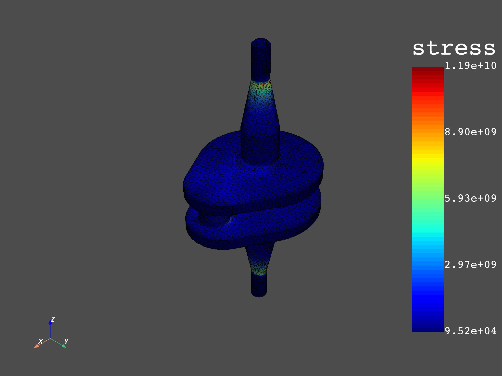

Note
Click here to download the full example code
Averaging order#
In this example, we compare two different workflows that accomplish the same task to see how the order of the operators can change the end result. In the first case, we will extract the stress field of a crankshaft under load from a results file, compute the equivalent (Von Mises) stresses and then apply an averaging operator to transpose them from an ElementalNodal to a Nodal position. In the second case, however, we will firstly transpose the stresses that come from the results file to a Nodal position and only then calculate the Von Mises stresses. These workflows can be better visualized in the images below:

Let’s start by importing the necessary modules.
from ansys.dpf import core as dpf
from ansys.dpf.core import examples
Then we can load the simulation results from a .rst file.
analysis = examples.download_crankshaft()
First case: applying the averaging operator after computing the equivalent stresses#
Here we are going to define a function that computes the Von Mises stresses in the crankshaft and then applies the desired averaging operator.
def compute_von_mises_then_average(analysis):
# First we create a model from the results of the simulation and retrieve its mesh
model = dpf.Model(analysis)
mesh = model.metadata.meshed_region
# Then we apply the stress operator to obtain the stresses in the body
stress_op = dpf.operators.result.stress()
stress_op.inputs.connect(model)
stresses = stress_op.outputs.fields_container()
# Here we compute the Von Mises stresses
vm_op = dpf.operators.invariant.von_mises_eqv()
vm_op.inputs.field.connect(stresses)
von_mises = vm_op.outputs.field()
# Finally, we apply the averaging operator to the Von Mises stresses
avg_op = dpf.operators.averaging.elemental_nodal_to_nodal()
avg_op.inputs.connect(von_mises)
avg_von_mises = avg_op.outputs.field()
# Aditionally we find the maximum value of the Von Mises stress field
min_max = dpf.operators.min_max.min_max()
min_max.inputs.field.connect(avg_von_mises)
max_val = min_max.outputs.field_max()
mesh.plot(avg_von_mises)
return max_val.data[0]
Second case: computing the equivalent stresses after applying the averaging operator#
This time, the function we are going to create will firstly apply the averaging operator to the stress field in the crankshaft and only then calculate the Von Mises stresses, that will be already located on a Nodal position.
def average_then_compute_von_mises(analysis):
# Creating the model from the results of the simulation
model = dpf.Model(analysis)
mesh = model.metadata.meshed_region
# Retrieving the stresses
stress_op = dpf.operators.result.stress()
stress_op.inputs.connect(model)
stresses = stress_op.outputs.fields_container()
# Averaging the stresses to a Nodal position
avg_op = dpf.operators.averaging.elemental_nodal_to_nodal()
avg_op.inputs.connect(stresses)
avg_stresses = avg_op.outputs.field()
# Computing the Von Mises stresses
vm_op = dpf.operators.invariant.von_mises_eqv()
vm_op.inputs.field.connect(avg_stresses)
avg_von_mises = vm_op.outputs.field()
# Finding the maximum Von Mises stress value
min_max = dpf.operators.min_max.min_max()
min_max.inputs.field.connect(avg_von_mises)
max_val = min_max.outputs.field_max()
mesh.plot(avg_von_mises)
return max_val.data[0]
Plotting the results#
Finally, we can plot both Von Mises stress fields side by side to see how they compare to each other. The first image displays the results when the equivalent stresses are calculated first, while the second one shows the case when the averaging is done first.
max1 = compute_von_mises_then_average(analysis)
max2 = average_then_compute_von_mises(analysis)
- 
diff = (max1 - max2) / max2 * 100
print("Max stress when Von Mises is computed first: {:.2f} Pa".format(max1))
print("Max stress when the stress averaging is done first: {:.2f} Pa".format(max2))
print("The maximum Von Mises stress value is {:.2f}% higher when \
the averaging is done after the calculations.".format(diff))
Max stress when Von Mises is computed first: 12494955907.48 Pa
Max stress when the stress averaging is done first: 11860260659.06 Pa
The maximum Von Mises stress value is 5.35% higher when the averaging is done after the calculations.
As we can see, even though both workflows apply the same steps to the same initial data, their final results are different because of the order in which the operators are applied.
Total running time of the script: ( 0 minutes 4.681 seconds)